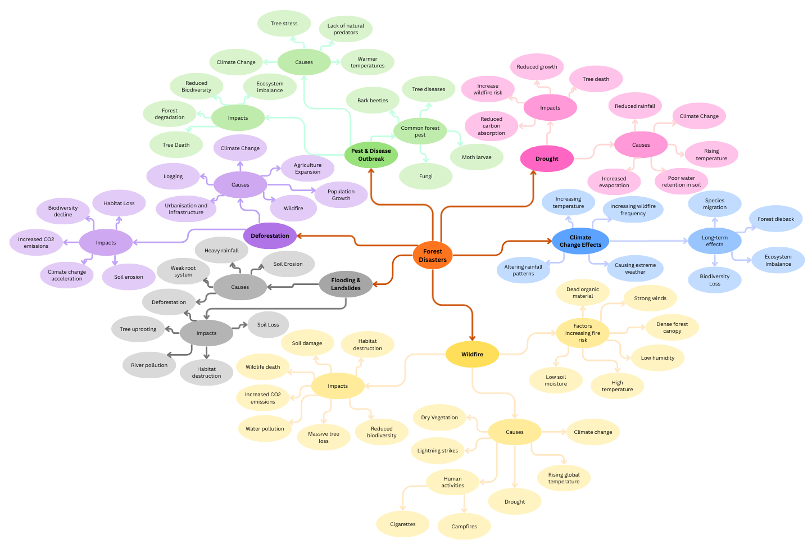
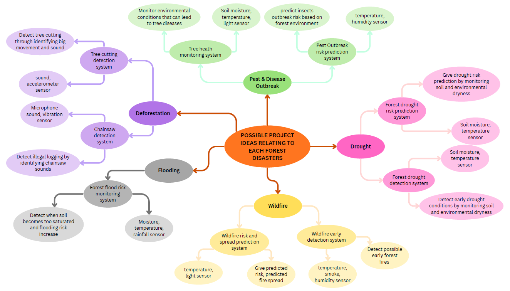
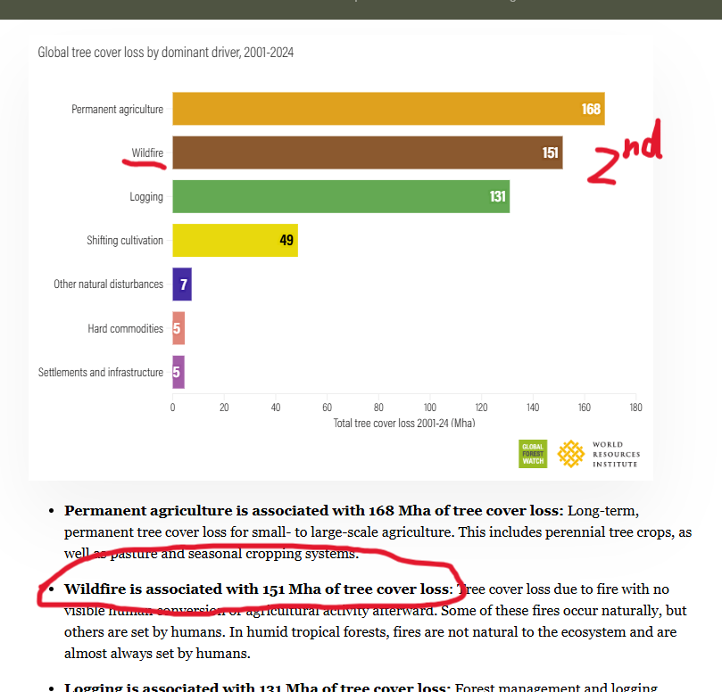

2. Investigation
2.1 Research on the brief, existing solutions, systems or ideas that are aligned to the brief
For my coursework, I researched many types of forest disasters such as flooding, fire and storm damage.

I researched 3 existing disaster / forest monitoring systems. NASA LANCE FIRMS detects wildfires worldwide using satellites. The NPWS monitoring system protects biodiversity and habitats by monitoring wildlife and forest ecosystems in Ireland. Teagasc forest carbon tool estimates how much carbon forests absorb and store.

I then listed out possible project ideas that are aligned to the brief.

I researched the causes of forest loss worldwide.

(Image from website on the left)
I researched forest locations in Ireland and found that the biggest fire in Ireland happened in 2020. Fire damaged 100 hectares of state-owned forestry.
2.2 How my research influenced my project decisions
From my research, I found that the systems that I researched disasters use similar approaches. All of them use sensors to collect data and store this data in databases. The data is then processed and analysed using computer models, GIS. They eventually produce outputs such as wildfire locations, ecosystem reports.
However, many existing systems rely on satellites, complex models and expensive equipment.
I also learnt that wildfires are a significant global forest threat. Wildfires are the second biggest cause of tree cover loss after permanent agriculture. Wildfires are associated with 168 Mha of tree cover loss from 2001 - 2024 worldwide. This highlights the importance of developing a system that can help to simulate and predict wildfire risk.
Therefore, I decided to build a computer model that simulates wildfire spread in a forest environment and estimate prediction risk based on the number of burning trees and environmental conditions.